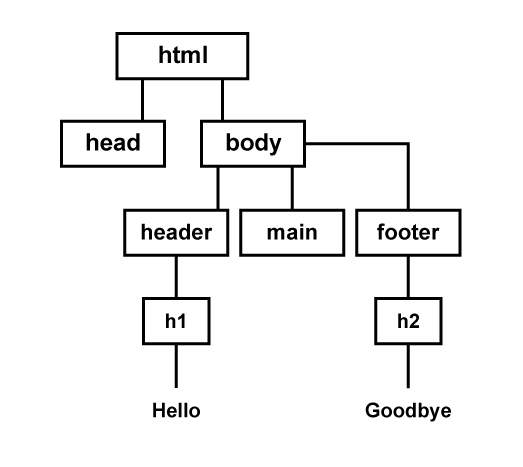
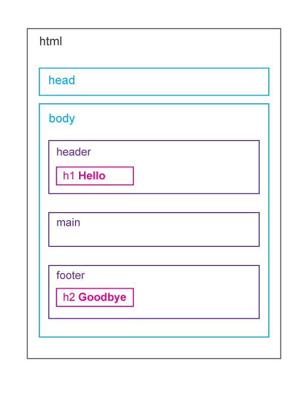
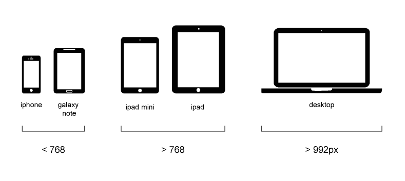
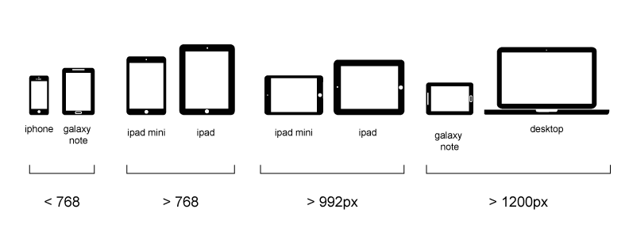
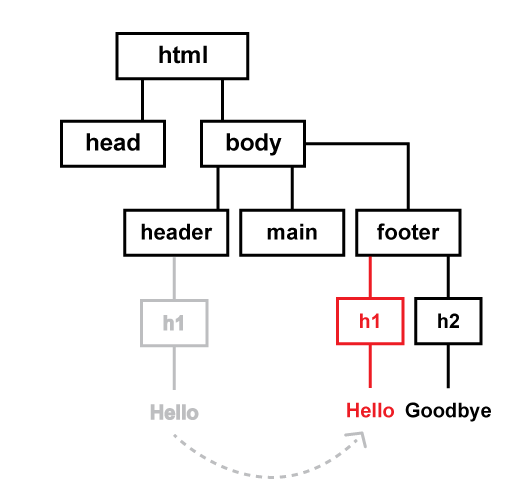

We're going to focus on the basics.
- Designing a front-end that works across multiple device breakpoints.
- Focus on page layout & composition.
html css js
Front-End BFFs
- The three technologies that make up the web's 'front-end'
- They've advanced over time but haven't been replaced since their introduction.
- Libraries like Bootstrap or jQuery are combinations of one or more of these technologies
Think of html as a tree.
A big tree of parent/child relationships


css
applies style to your html
When we talk about the RWD basics.
We're talking about html css
Media Queries allow us to define multiple sets of styles based on device features like screen orientation, display dimensions & resolution
Setting responsive breakpoints
- Display sizes are NOT standardized. It's a spectrum.
- We set breakpoints along the spectrum to establish where we want to redefine UI and layout.
- Typically you set 3 breakpoints based on width and let the devices sort themselves out based on their dimensions.

...and then it gets complicated
Setting responsive breakpoints: resolution and device orientation
Screen resolution and device orientation add complexity to our simple breakpoint system.

Setting responsive breakpoints: device width vs. browser width
Let's build a responsive grid system
Your project needs a detailed design phase.
You're not redesigning the nav, you're redesigning 5 navs.
Think in terms of percentages instead of pixels.
%
There's no perfect solution for responsive images.
Don't use responsive images.
Do hide and show minor UI elements to support responsive.
Don't break the parent/child structure of your document.

Don't depend on rollovers.
Don't obsess over height.
Rectangles, not squares